01钩子 / 问题
从热点疲劳切换到新工具
开场用‘今天不聊 DeepSeek’制造反差，随后承诺推荐一个更强的视频模型。钩子依赖时效和新鲜感，而不是用户具体痛点。
Ray2 能从文字或图片生成动态幅度较大、连贯性较好的视频，基本流程是上传图片、选择模型与时长后生成。
这是一条典型的中位新品教程：26秒内完成工具介绍、能力主张、三步操作和结果展示，结构完整但惊喜点并不稀缺；价格、额度、入口与关键帧限制全部留在评论区追问。
Ray2 能从文字或图片生成动态幅度较大、连贯性较好的视频，基本流程是上传图片、选择模型与时长后生成。
不是复述内容，而是标出每一段承担的叙事任务、观众问题和画面证据。
开场用‘今天不聊 DeepSeek’制造反差，随后承诺推荐一个更强的视频模型。钩子依赖时效和新鲜感，而不是用户具体痛点。
她介绍 Ray2 由 Luma 用高质量视频数据训练，能够通过一句话或一张图生成高美学、高动态视频，并用成片证明运动幅度。
进入 Luma，上传一张图、选择 Ray2，再选择画质和时长并点击生成。步骤非常短，但没有解释入口、套餐或参数差异。
最终视频展示大范围运动下仍较连贯、物理效果不易扭曲，随后用‘快去玩’收束。结果完成闭环，但缺少失败对照。
下列章节覆盖视频的主要论点、步骤与结果；每段都保留时间码和关键画面。
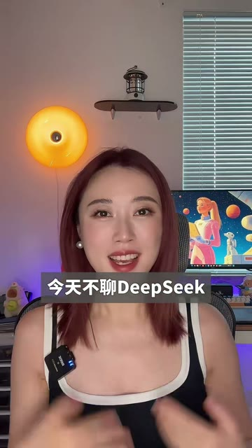
开场用‘今天不聊 DeepSeek’制造反差，随后承诺推荐一个更强的视频模型。钩子依赖时效和新鲜感，而不是用户具体痛点。
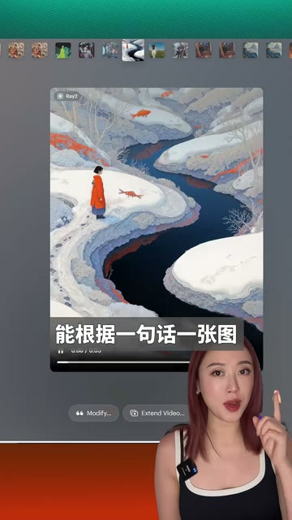
她介绍 Ray2 由 Luma 用高质量视频数据训练，能够通过一句话或一张图生成高美学、高动态视频，并用成片证明运动幅度。
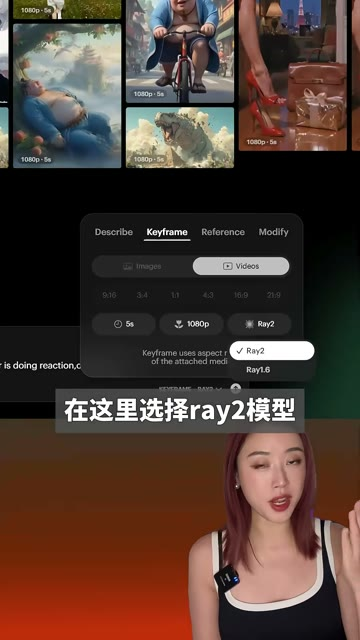
进入 Luma，上传一张图、选择 Ray2，再选择画质和时长并点击生成。步骤非常短，但没有解释入口、套餐或参数差异。
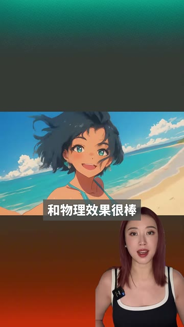
最终视频展示大范围运动下仍较连贯、物理效果不易扭曲，随后用‘快去玩’收束。结果完成闭环，但缺少失败对照。
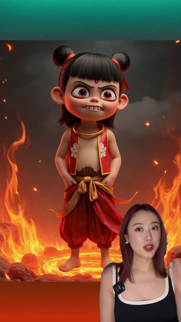
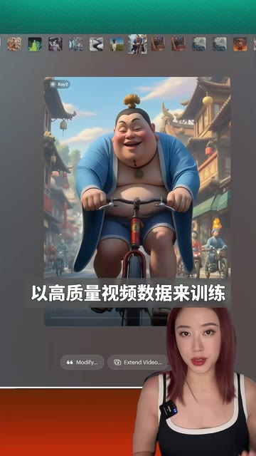
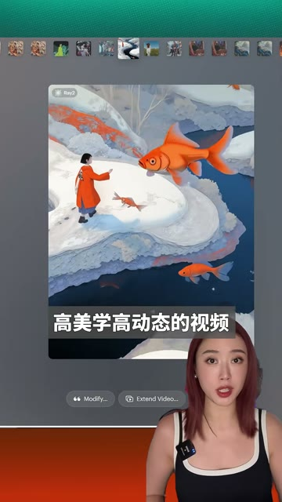
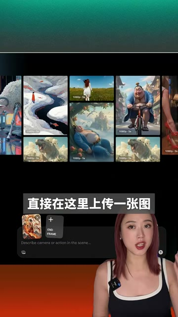
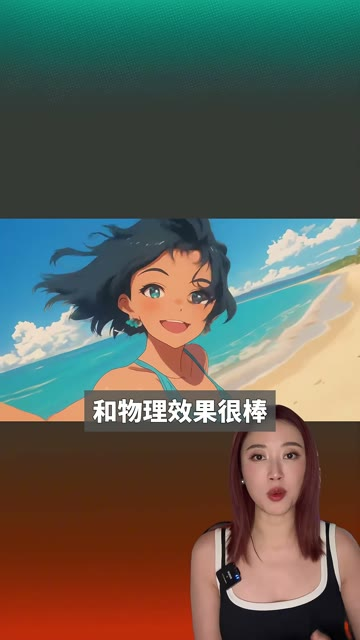
短视频每 1 秒、常规视频每 2 秒、超长视频每 3 秒取一帧。
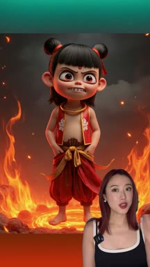
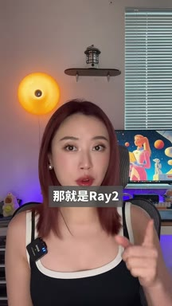
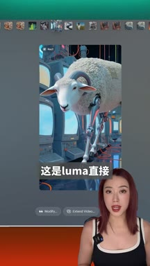
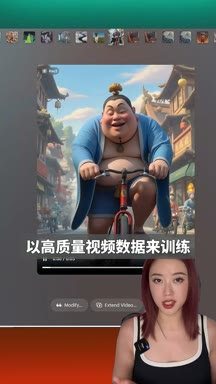
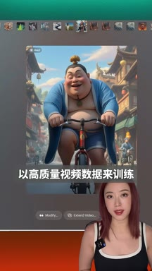
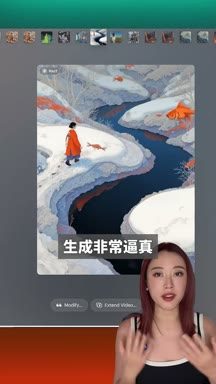
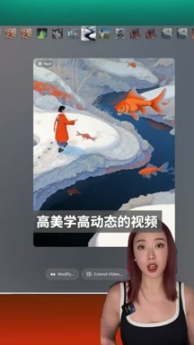
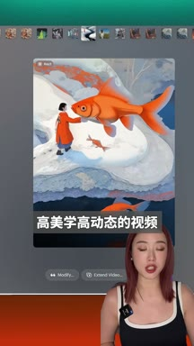
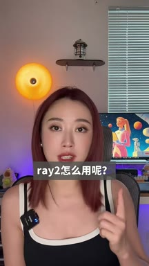
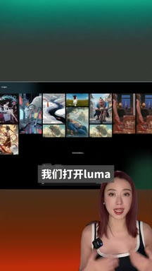
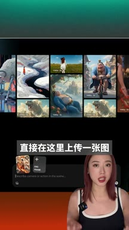
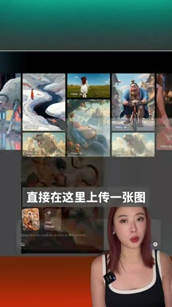
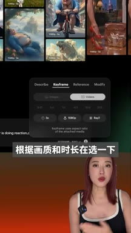
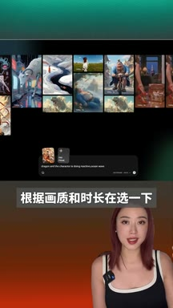
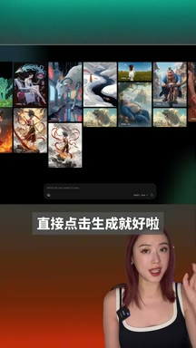
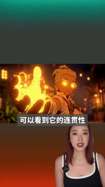
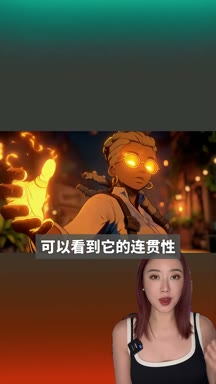
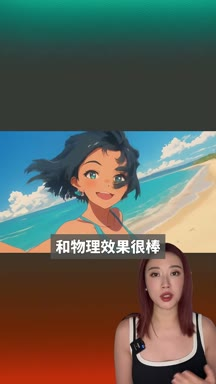
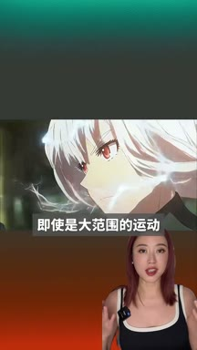
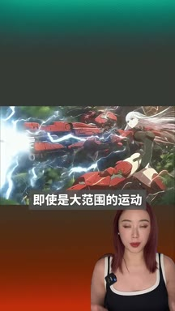
小红书官方 zh-CN 字幕 · 7 段 · 185 字。字幕只记录声音；工具名、界面文字和结果含义必须结合上方视觉知识地图复核。
终于来啦，今天我们不聊dipsick，给大家推荐一个超强的视频模型
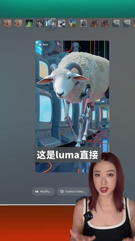
那就是re二，这是luma直接以高质量的视频数据来训练
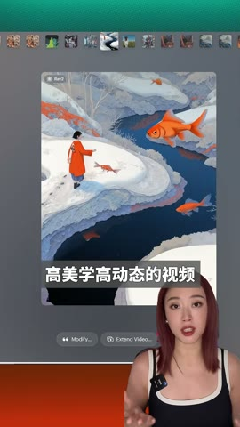
能根据一句话一张图生成非常逼真的高美学高动态的视频，那么re二怎么用呢？
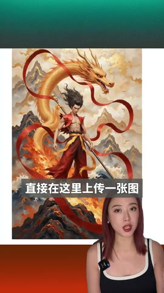
我们打开luma在这里直接上传一张图，在这里选re二模型
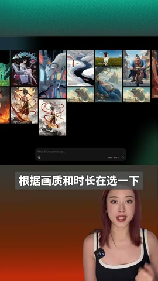
根据画质和时长再选一下，直接点击生成就好啦
可以看到它的连贯性和物理效果都很棒，即使是大范围的运动也不会扭曲
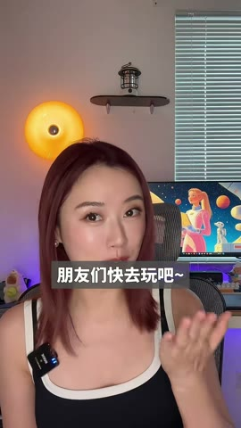
朋友们快去玩儿吧
公开视频只能证明一次成功演示与公开互动；评论中的价格、免费额度、入口和关键帧能力仍未在正文解决，无法判断点击率、完播或转粉。
打开小红书原帖 ↗